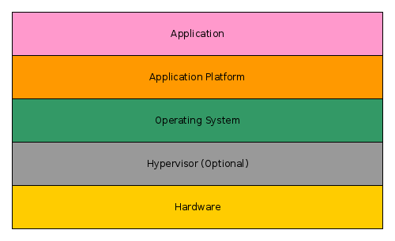
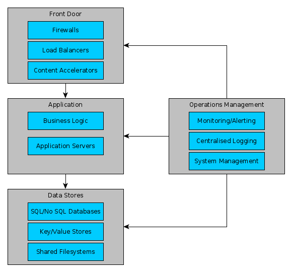

Next Gen Infrastructure
Openstack and Docker
Created by Graeme Gillies
Agenda
- Who am I?
- Infrastructure Overview
- Openstack
- Docker and Container Management
- Demonstration
- The future
Who am I?
- Cloud Architect at Red Hat
- Systems Administrator/Operations Background
- Over 3.5 years experience building/maintaining Private Clouds
Infrastructure Overview
Layers of Infrastructure

Infrastructure Overview
Typical Application Ecosystem

Openstack
Private Cloud Compute Platform
- Compute, Networking, Storage
- Load Balancer AAS (in Neutron)
- Database AAS (Trove Project)
- Monitoring AAS (Telemetry Project)
- Filesystem AAS (Manila Project)
- VPN AAS (in Neutron)
Openstack
Orchestration via Heat
example template
Docker and Container management
Lightweight container management with a git-like workflow
- Incredibly powerful packaging tool
- Explosion of tools and ecosystems around managing and deploying dockers
- Designed to be immutable, though they have the ability to attach storage volumes
- Very attractable workflow for repeatable deployment
- Synergises well with "12 Factor App" design
Docker and Container management
Lightweight container management with a git-like workflow
docker ecosystem
Demonstration
So what can we do now?
The future
- Operations will be better be able to provide infrastructure and platforms as a "product" to developers
- Developers should be able to better build their applications and provide repeatable/workable deployment units
- Both Developers and Operations can unify design and management of entire ecosystems
- We will continue to explore containerisation and see how far we can push it
- IAAS/PAAS/Container/Configuration Management/Orchestration solutions will become more aware of each other
- Dedicated Hardware Devices will be around for a while, but they will give way to Software Based Solution
The future
Projects to keep an eye on
- Google Kubenetes
- Red Hat Openshift
- Flynn
- Openstack Solum